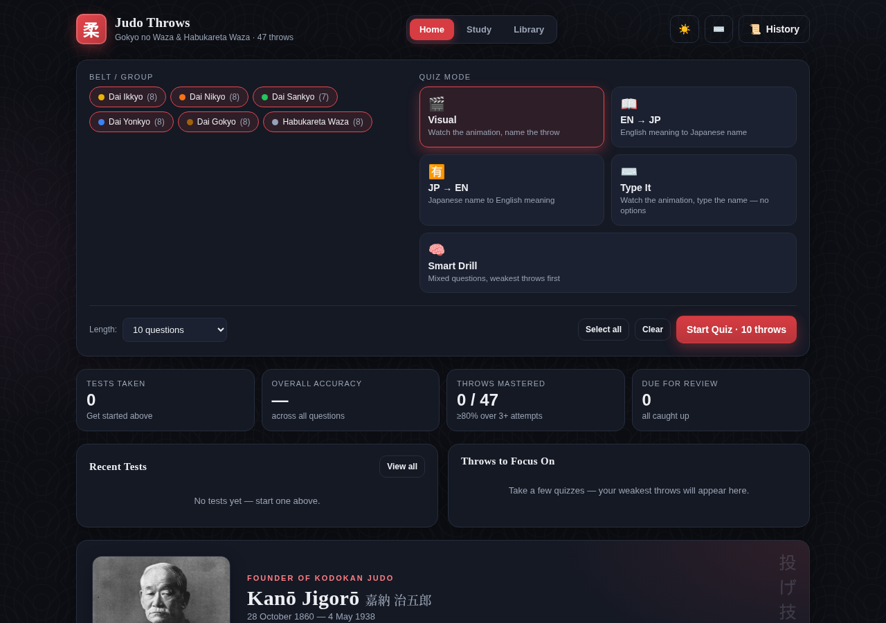
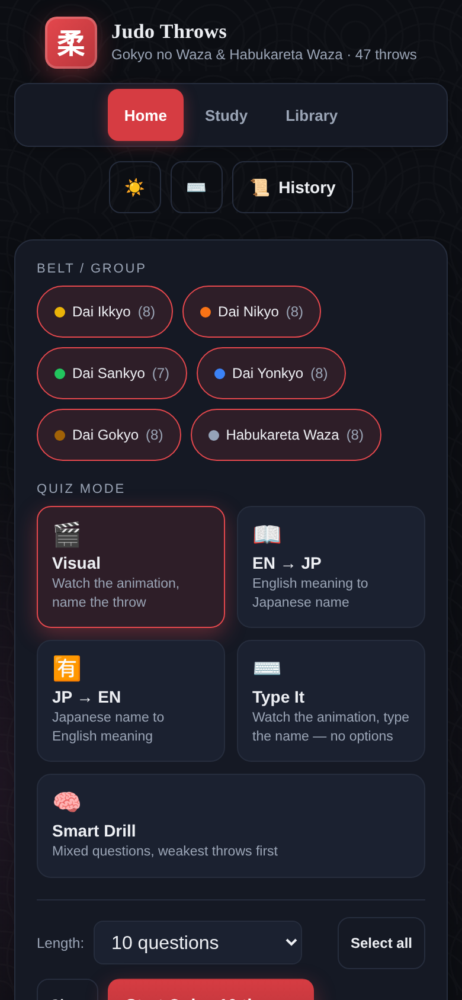

Kids
Youth Judo
Confidence, discipline, and safe falling — taught through games and technique in a structured, respectful dojo.
| Tue & Thu | 6:00 – 7:00 PM |
|---|
Matthews, North Carolina · Est. tradition, modern dojo
Physical exercise, mental training, and life skills that last — for kids and adults. We educate, inspire, and connect judoka throughout the Carolinas.
Programs & schedule
Walk in during any class — your first session is free and we'll lend you a uniform.
Confidence, discipline, and safe falling — taught through games and technique in a structured, respectful dojo.
| Tue & Thu | 6:00 – 7:00 PM |
|---|
From first breakfall to shiai competition — recreational and competitive training for every level, six days a week.
| Mon – Fri | 7:00 – 8:30 PM |
|---|---|
| Saturday | 11:00 AM – 12:30 PM |
Free study tool
Our free flashcards app covers the full Gokyo no Waza and the preserved Habukareta Waza: animated demonstrations, quizzes, spaced repetition, and a typed-answer mode that forgives your spelling. It works offline and installs to your phone like a native app.


Dojo etiquette · 礼儀
Judo begins and ends with respect. New to the dojo? These five habits cover almost everything.
Bow when entering or leaving the dojo, stepping on or off the tatami, and before and after every partner drill or randori. A standing bow (ritsurei) is a straight-backed 30°, held briefly — never rushed.
Keep your judogi clean and free of rips, and tie your belt properly. A cared-for uniform shows consideration for every partner who grips it.
Nails trimmed short, long hair tied back, all jewelry off — rings, necklaces, earrings, watches. Your partners' safety depends on it.
No shoes, food, or drinks on the tatami. Sit in seiza or cross-legged when not training — no sprawling or leaning on walls. Running late? Bow at the mat's edge and wait for the instructor's welcome.
Address the instructor as Sensei and senior students with courtesy. Watch how the senior grades conduct themselves — that's the fastest way to learn the culture.
Kanō Jigorō taught judo as a dō — a path of physical, intellectual, and moral growth. Pick one etiquette habit each session, practice it deliberately, and carry it beyond the dojo.
Your teachers
A deep bench of dan-grade coaches — from first-lesson fundamentals to national-level refereeing and kata.
8th Dan · Head Coach
On the mat since 1957, with competitive years across the U.S. and three in Europe. National Referee and Kata Instructor, leading CAJA's 150-plus members.
6th Dan
4th Dan
3rd Dan
2nd Dan
2nd Dan
2nd Dan
1st Dan
1st Dan
Full bios and photos coming as we build out the new site.
About CAJA
Carolina's American Judo Association sits in Matthews, North Carolina — between the two Carolinas we serve. Our mission is simple: educate, inspire, and connect judoka throughout the Carolinas, whether they step on the mat to compete, to get fit, or to find a second family.
“Maximum efficiency with minimum effort. Mutual welfare and benefit.” — Kanō Jigorō, founder of Kodokan Judo · 精力善用 · 自他共栄
Hosted here in Matthews, NC
Three days. 20+ hours of training across judo, jujitsu, aikido, and karate — headlined by two-time Olympian Javier Guédez. Families train together: adults on the mats, kids ages 4–12 in a dedicated Kids' Zone with pool parties, movies, and themed nights. Catered meals and a camp t-shirt included. All organizations welcome.
Come train with us
No experience needed, no gear needed — we provide a temporary uniform. Just show up a few minutes early and say hello.